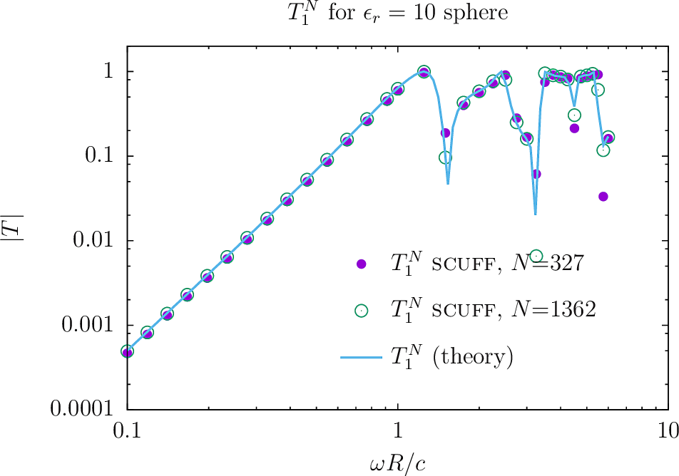
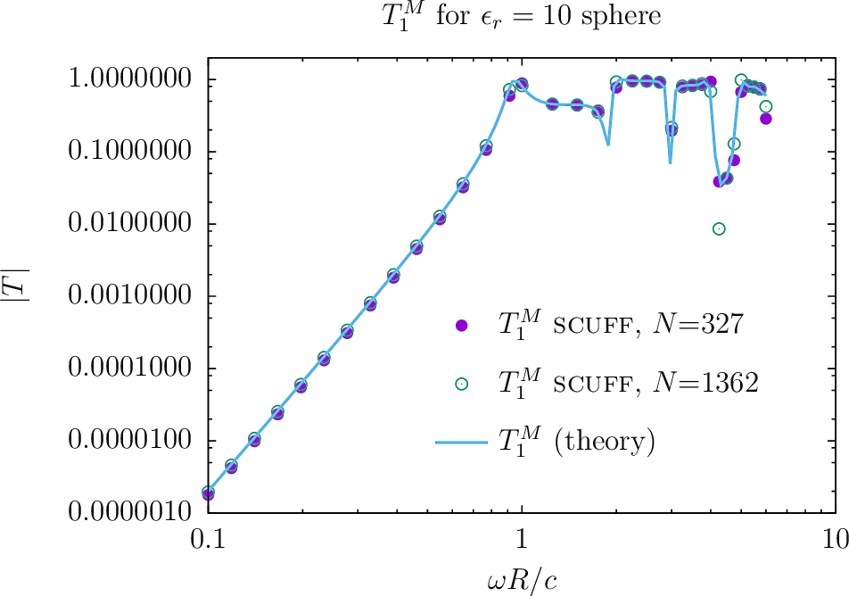
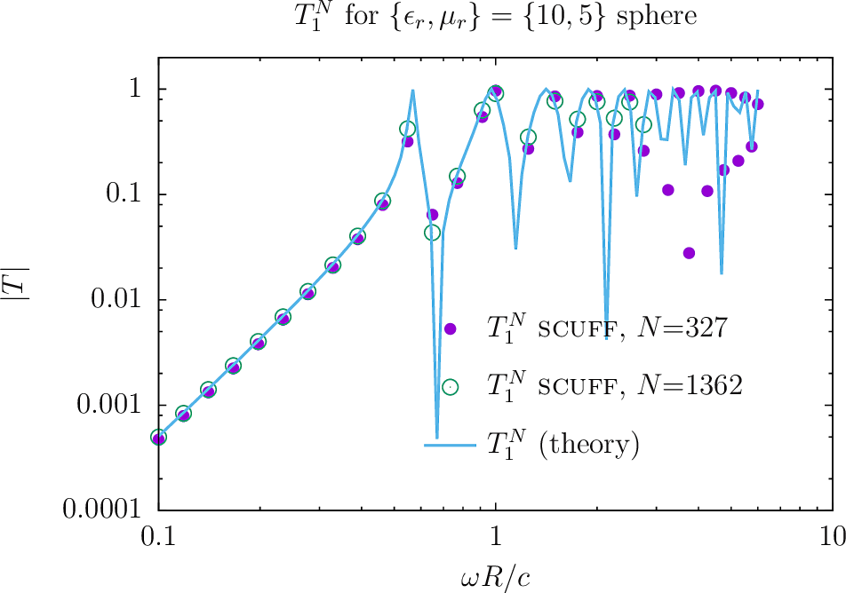
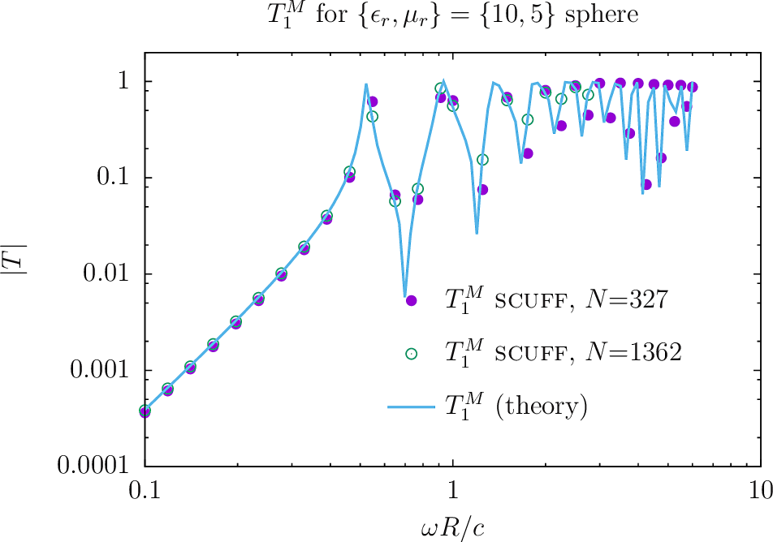

Computing T-Matrices of arbitrary objects with scuff-tmatrix
The well-known T-matrix method is a widely used technique for solving problems involving electromagnetic scattering from compact objects. In this method, the scattering properties of a compact body are encapsulated in its T-matrix, whose entries give the amplitudes of the outgoing spherical waves that arise from irradiating the object with a single regular spherical wave.
scuff-tmatrix is a specialized tool within the scuff-em code suite for computing the T-matrix of arbitrarily-shaped objects with arbitrary frequency-dependent material properties.
To compute the T-matrix of an object (or a collection of objects) using scuff-tmatrix, you will
-
create a geometry file describing the shapes and material properties of the scattering objects in your geometry;
-
run scuff-tmatrix with command-line options specifying the geometry, the maximum spherical-wave index of the spherical waves to consider (which determines the dimension of the computed T-matrix), and the frequency range over which to run computations.
You will get back
-
a text file listing the T-matrix elements , at all frequencies you requested, for all pairs of vector-spherical-wave indices satisfying
-
optionally, a binary
.HDF5file containing the T-matrix data together with simple scripts for importing the data into julia.
1. scuff-tmatrix Command-Line Options
The following table summarizes all command-line options currently available in scuff-tmatrix.
As is true for all programs in the scuff-em suite, command-line options may be specified in a text file catted to standard input; see here for an example of how this works.
Options controlling the scattering geometry
--geometry MyGeometry.scuffgeo
Specifies the geometry file describing the scattering geometry. This option is always mandatory.
Options specifying the frequencies considered
--Omega xx --OmegaFile MyFile
--Omega specifies an angular frequency at which to run computations, in units of rad/sec (m).
The value specified for --Omega may be a complex number.
You may request computations at more than one frequency by using the
--Omega option more than once, i.e. you may say
--Omega 1e-2 --Omega 1e-1 --Omega 1 --Omega 10
However, for more than a few frequencies it is more convenient to use
the --OmegaFile option, which specifies a file containing an
entire list of --Omega values, one per line; blank lines and comments (lines beginning with #) are skipped.
Option describing the range of spherical-wave indices
--lMax 3
Request calculation of T-matrix entries with spherical wave indices up to and including (and all -values and polarizations). As described below, for a maximum -value of the -matrix has dimension where .
If you do not specify this option, the default value is lMax=3.
Options controlling output files
--FileBase MyFileBase
Sets the base file name for output files. T-matrix
data in text format are written to FileBase.TMatrix.
T-matrix data in binary (HDF5) format are written
to FileBase_wXXXX.HDF5 where XXXX denotes the
angular frequency.
If not specified,
--FileBase defaults to the base filename of the .scuffgeo
file.
--WriteHDF5Files
This boolean flag requests that binary T-matrix data be written
to HDF5 files.
A separate HDF5 file is created for each frequency,
with file name FileBase_wXXXX.HDF5 where XXXX denotes
the angular frequency. T matrix data are written
in the form of a real-valued matrix (data set) named T
with dimension ;
for columns and give the
real and imaginary parts of the -matrix entry for
column .
Here is
the total number of vector spherical waves with
(T-matrix rows and columns
are indexed as shown in this table.)
Note that, in contrast to text-based output, binary data output is disabled by default; you must specify this option to enable binary data output.
2. scuff-tmatrix Output Files
1. T-matrix data in text form
scuff-tmatrix always writes T-matrix
data to a text-based output file named FileBase.TMatrix,
where FileBase is the value you gave for the --FileBase
command-line parameter. (If you didn't set this option,
FileBase defaults to MyGeometry where MyGeometry.scuffgeo
was the name of the file you specified with the --geometry
option.)
Each line of the text-based output file contains a single T-matrix element at a single frequency. The format of each line is this:
Omega A La Ma Pa B Lb Mb Pb real(T) imag (T)
The tuple(A,La,Ma,Pa) labels the spherical wave that constitutes the
row index for the T-matrix entry.
(Here (La,Ma)= are the usual spherical-wave
indices, Pa= is a polarization
index (0 or 1 for and -type
vector spherical waves respectively) and A=
is an integer in the range that uniquely
indexes the spherical wave. (See the table below).
The tuple(B,Lb,Mb,Pb) labels the spherical wave that constitutes the
column index for the T-matrix entry.
The final two entries on the line are the real and imaginary parts of the T-matrix entry for the given pair of spherical waves at the given frequency.
Physically, the T-matrix element with row index and column index is the amplitude of the outgoing spherical wave with indices that results from illuminating your object with a regular spherical wave with indices .
See below for a simple shell script you can use to extract a particular
T-matrix entry vs. frequency from the .TMatrix file.
Also see below for a julia code that you can use to import T-matrix data into a julia session.
2. T-matrix data in binary form
If you specify the --WriteHDF5Files command-line argument, then
T-matrix data will be written in binary HDF5 format to
files named FileBase_wXXXX.HDF5 where XXXX stands for
the angular frequency .
Ordering and indexing of spherical waves
For a fixed single value of there are spherical waves: pairs of spherical-wave indices times 2 polarizations (\mathbf{M},\mathbf{N}). The total number of distinct spherical waves with is . This is the dimension of the matrix computed at each frequency. (Note that I exclude waves from my indexing scheme entirely.)
The rows and columns of the -matrix are indexed by integers running from to . Spherical waves are ordered and indexed as follows:
The integer index for a given triple may be computed according to
3. scuff-tmatrix Examples
Here are some examples of calculations you can do with scuff-tmatrix. Input files and command-line
runscripts for all these examples are included in the
share/scuff-em/examples subdirectory of the scuff-em installation.
4a. Dielectric and magnetic spheres
We start with the canonical textbook stalwart of scattering from a homogeneous sphere of uniform isotropic relative permittivity and relative permeability
Analytical expressions for T-matrix elements
This is an example (indeed, the only example) of a dielectric object whose T-matrix may be computed analytically, making it a useful benchmark for our numerical computation; the -matrix is diagonal and independent of the spherical-wave index, with -dependent elements
where , are the usual spherical Bessel and Hankel functions and
Geometry and mesh files
The first step is to create meshed surfaces representing spheres discretized with various resolutions, then write scuff-em geometry files describing spheres of various material properties. This process is described in detail here. In this case we will use two gmsh mesh files for a sphere of radius :
-
Sphere_327.msh, a moderate-resolution mesh with 327 internal triangle edges, and -
Sphere_1362.msh, a finer mesh with 1362 internal triangle edges.
For each meshing resolution I will create 3 .scuffgeo files
describing spheres of different materials:
-
perfect metal (PEC),
-
homogeneous dielectric with , and
-
homogeneous dielectric/magnetic with .
OBJECT Sphere
MESHFILE Sphere_327.msh
ENDOBJECT
OBJECT Sphere
MESHFILE Sphere_327.msh
MATERIAL CONST_EPS_10
ENDOBJECT
OBJECT Sphere
MESHFILE Sphere_327.msh
MATERIAL CONST_EPS_10_MU_5
ENDOBJECT
Frequency list
We create a simple file called
OmegaFile containing a
list of angular frequencies (in units of rad/sec)
at which to compute T-matrices:
0.10000000 0.11853758 .... 6.00000000
Run scuff-tmatrix
And now we launch scuff-tmatrix:
% scuff-tmatrix --geometry E10Sphere_327.scuffgeo --omegafile OmegaFile --lmax 3
This produces the file E10Sphere_327.TMatrix, which contains one
T-matrix entry per line, with a file header at the top to
remind you which is which:
## scuff-tmatrix run on hikari (11/06/17::01:34:31)
## columns:
## 1 omega
## 2,3,4,5 (alpha, {L,M,P}_alpha) (T-matrix row index)
## 6,7,8,9 ( beta, {L,M,P}_beta) (T-matrix columnindex)
## 10, 11 real, imag T_{alpha, beta}
0.1 0 1 -1 +0 0 1 -1 +0 -1.34273817e-07 +3.62883443e-04
0.1 0 1 -1 +0 1 1 -1 +1 +1.13651828e-09 -1.05703395e-06
...
...
...
3.25 2 1 +0 0 9 2 -1 1 +8.56628506e-05 +2.48397970e-04
...
...
...
As an example, the lowest line above is interpreted as follows: At angular frequency rad/sec, for the spherical-wave pair [where is a -type wave with and is an -type wave with , the -matrix element is
To assess the impact of meshing fineness, let's re-run the example with a finer mesh. We will use the sphere mesh with 1362 interior edges:
% scuff-tmatrix --geometry E10Sphere_1362.scuffgeo --omegafile OmegaValues.dat
E10Sphere_1362.TMatrix, with file format
similar to the above.
Here are plots of and , for both non-magnetic and magnetic spheres, as computed (1) by scuff-tmatrix, with both coarse and finer meshes, (2) using the exact analytical formulas above. (Here is the gnuplot script I used to generate the plots.)



